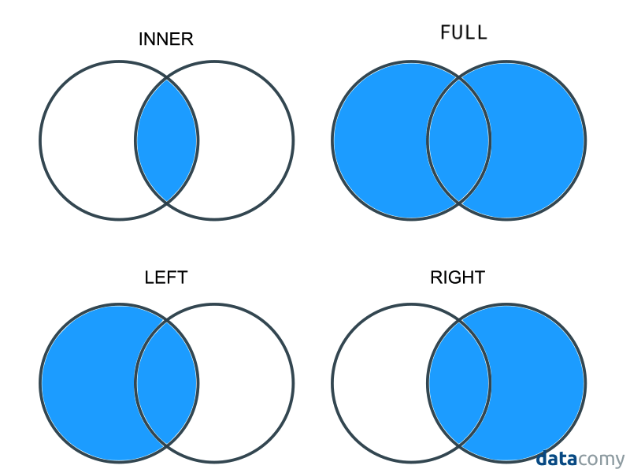

Intro to Merging¶
This tutorial explains how to combine different datasets through merging. Merging is basically a way of combining the columns from one dataset with those of another.
To illustrate the kind of situation where you may end up wanting to merge data, suppose that you are interested in how economic development affects democracy across countries, but all you have are two separate datasets, each with data on one of these two outcomes – say, economic data from the World Bank and political data from the Polity Project. In order to study how these things relate to one another, we need to combine these two data sets.
(If you don’t care about democracy, just imagine we’re talking about something you care about, like urban pollution levels instead of democracy scores! The logic is the same.)
In a previous reading, I argued that subsiding data is probably the most important skill you will learn as a data scientist. Being able to subset data carefully makes it possible to study how all sorts of outcomes vary across different groups.
Merging, I would argue, is the second most important skill for generating insights in data science. It is hard to overstate the value that comes from bringing together two disparate sources of information and studying how they relate to one another. This may surprise you coming from someone who teaches data science – most people would assume a data scientist believes value comes from fancy models – but in my experience, most insights come from documenting simple empirical regularities about the world that nobody has noticed before. We often use more sophisticated statistical modeling in order to evaluate the strength of relationships, and to help us understand what is driving those empirical regularities, but all of that work is secondary to just being able to measure basic features of the world. And merging is key to that process.
A Merging Example¶
To illustrate merging, let’s suppose that we want to do the analysis of the relationship between political outcomes and economic development we described above. Below we create to toy data sets, one with democracy scores (analogous to those you might get from a group like the Polity Project), and one with economic information (like the type of information you might get from the World Developing Indicators):
[1]:
# Generate toy dataset 1:
demo <- data.frame(
country = c("USA", "Albania", "Turkey", "China", "Sudan"),
democracy_score = c(19, 16, 16, 5, 10)
)
demo
| country | democracy_score |
|---|---|
| <chr> | <dbl> |
| USA | 19 |
| Albania | 16 |
| Turkey | 16 |
| China | 5 |
| Sudan | 10 |
[2]:
# Generate toy dataset 2:
econ <- data.frame(
country = c("China", "Albania", "Turkey", "USA", "Sudan"),
gdp_pc = c(12000, 10000, 9000, 20000, 500)
)
econ
| country | gdp_pc |
|---|---|
| <chr> | <dbl> |
| China | 12000 |
| Albania | 10000 |
| Turkey | 9000 |
| USA | 20000 |
| Sudan | 500 |
To merge two data sets, they must have an identifier in common – one or more columns whose values allow us to understand which rows are identifying the same entities in the two datasets. In the case of these two datasets, the common identifier is country name, stored in the column "country" in both datasets.
To do the actual merge, we will use the join() command from a package called statar. This isn’t the most popular package for merging and R, but for reasons we’ll discuss enter next reading, I definitely think it’s the best.
join() requires at least four arguments: the two datasets you want to merge, and the name of the column(s) containing the common identifier, and the type of merge (which, for now, we’ll just specify as "inner", but we’ll talk more about what that means below). In this case, our call to join would look like this:
[3]:
library(statar)
df <- join(demo, econ, on = "country", kind = "inner")
df
Joining with `by = join_by(country)`
| country | democracy_score | gdp_pc |
|---|---|---|
| <chr> | <dbl> | <dbl> |
| USA | 19 | 20000 |
| Albania | 16 | 10000 |
| Turkey | 16 | 9000 |
| China | 5 | 12000 |
| Sudan | 10 | 500 |
This is called a 1-to-1 merge because each row in the first dataset matches up to exactly one row in the second dataset – i.e. each country appears only once in the first dataset, and matches up to a single row in the second dataset (the row with the same country identifier).
Your common identifier may be spread across multiple columns. Consider the following example:
[4]:
# Generate toy dataset 1:
country <- rep(c("USA", "China", "Sudan", "India"), 2)
year <- c(1994, 1994, 1994, 1994, 1995, 1995, 1995, 1995)
democracy <- round(runif(8, 0, 20), 0)
demo <- data.frame(country, year, democracy)
demo
| country | year | democracy |
|---|---|---|
| <chr> | <dbl> | <dbl> |
| USA | 1994 | 13 |
| China | 1994 | 5 |
| Sudan | 1994 | 12 |
| India | 1994 | 3 |
| USA | 1995 | 2 |
| China | 1995 | 20 |
| Sudan | 1995 | 13 |
| India | 1995 | 16 |
[5]:
# Generate toy dataset 2:
econ <- data.frame(
year = c(
1994, 1994, 1994,
1995, 1995, 1995,
1996, 1996, 1996
),
country = c(
"United States", "China", "Sudan",
"United States", "China", "Sudan",
"United States", "China", "Sudan"
),
gdp_pc = round(runif(9, 1000, 20000), 0)
)
econ
| year | country | gdp_pc |
|---|---|---|
| <dbl> | <chr> | <dbl> |
| 1994 | United States | 16273 |
| 1994 | China | 19387 |
| 1994 | Sudan | 7304 |
| 1995 | United States | 12422 |
| 1995 | China | 5236 |
| 1995 | Sudan | 9143 |
| 1996 | United States | 5243 |
| 1996 | China | 15933 |
| 1996 | Sudan | 9540 |
In this situation, "country" does not fully identify which row is supposed to match up with which row across the two datasets, since we clearly want to match up the row for USA in 1994 in demo with the same row in econ.
To accommodate that, you can pass multiple columns to join’s on argument. e.g.:
[6]:
join(demo, econ, on = c("country", "year"), kind = "inner")
Joining with `by = join_by(country, year)`
| country | year | democracy | gdp_pc |
|---|---|---|---|
| <chr> | <dbl> | <dbl> | <dbl> |
| China | 1994 | 5 | 19387 |
| Sudan | 1994 | 12 | 7304 |
| China | 1995 | 20 | 5236 |
| Sudan | 1995 | 13 | 9143 |
What Rows Do You Keep?¶
As you may have noticed in the example above, our demo dataset had more countries than our econ dataset (it included India, while econ did not), and econ included more years than demo (namely: 1996). And when we merged the two datasets, only the country-year pairs that were common to both data sets were kept.
This is what’s referred to is an inner join. In an inner join, only rows whose identifiers are present in both datasets are kept in the final dataset. But inner is just one of four types of merges:
keep all rows (whether the match or not): full join (also sometimes called an outer join)
keep matching rows + unmatched rows from your “left” dataset (the first dataframe you pass to
join): left joinkeep matching rows + unmatched rows from your “right” dataset (the second dataframe you pass to
join): right joinkeep only matching rows: inner join
These four types of merges are nicely illustrated in this figure from datacomy:

We can specify the type of join we want with the kind argument:
[7]:
# keep all rows, matching or not
join(demo, econ, on = c("country", "year"), kind = "full")
Joining with `by = join_by(country, year)`
| country | year | democracy | gdp_pc |
|---|---|---|---|
| <chr> | <dbl> | <dbl> | <dbl> |
| USA | 1994 | 13 | NA |
| China | 1994 | 5 | 19387 |
| Sudan | 1994 | 12 | 7304 |
| India | 1994 | 3 | NA |
| USA | 1995 | 2 | NA |
| China | 1995 | 20 | 5236 |
| Sudan | 1995 | 13 | 9143 |
| India | 1995 | 16 | NA |
| United States | 1994 | NA | 16273 |
| United States | 1995 | NA | 12422 |
| United States | 1996 | NA | 5243 |
| China | 1996 | NA | 15933 |
| Sudan | 1996 | NA | 9540 |
[8]:
# keep matching + unmatched in demo observations
# (Left join)
join(demo, econ, on = c("country", "year"), kind = "left")
Joining with `by = join_by(country, year)`
| country | year | democracy | gdp_pc |
|---|---|---|---|
| <chr> | <dbl> | <dbl> | <dbl> |
| USA | 1994 | 13 | NA |
| China | 1994 | 5 | 19387 |
| Sudan | 1994 | 12 | 7304 |
| India | 1994 | 3 | NA |
| USA | 1995 | 2 | NA |
| China | 1995 | 20 | 5236 |
| Sudan | 1995 | 13 | 9143 |
| India | 1995 | 16 | NA |
As you can see, when you keep unmatched rows, R places NA values in entries that didn’t match, and so don’t have data for certain columns. We’ll talk about NAs in our missing data reading.
1-to-Many / Many-to-1 Merging¶
In our previous examples, the identifier we used clearly told R how to match each row of one dataset to exactly one row of the other dataset. We call this a 1-to-1 merge.
Sometimes, though, each row from one dataset may match up to multiple rows of the other. In these situations, we do a 1-to-many merge. Say, for example, we have the following two data frames:
[9]:
demo <- data.frame(
country = c(
"USA", "China", "Sudan",
"USA", "China", "Sudan",
"USA", "China", "Sudan"
),
year = c(
1994, 1994, 1994,
1995, 1995, 1995,
1996, 1996, 1996
),
democracy_score = round(runif(9, 0, 20), 0)
)
demo
| country | year | democracy_score |
|---|---|---|
| <chr> | <dbl> | <dbl> |
| USA | 1994 | 16 |
| China | 1994 | 19 |
| Sudan | 1994 | 17 |
| USA | 1995 | 3 |
| China | 1995 | 1 |
| Sudan | 1995 | 7 |
| USA | 1996 | 11 |
| China | 1996 | 18 |
| Sudan | 1996 | 7 |
[10]:
region <- data.frame(
country = c("USA", "China", "Sudan"),
region = c("America", "Asia", "Africa")
)
region
| country | region |
|---|---|
| <chr> | <chr> |
| USA | America |
| China | Asia |
| Sudan | Africa |
Because region doesn’t vary over time, we have only 1 entry per country in the region dataset, while we have many entries for each county in demo (one per country-year pair). And when we merge the datasets, we want all the rows in demo to get copies of the matching row in region.
This can be done with join with no actual modifications to our code:
[11]:
join(demo, region, on = "country", kind = "inner")
Joining with `by = join_by(country)`
| country | year | democracy_score | region |
|---|---|---|---|
| <chr> | <dbl> | <dbl> | <chr> |
| USA | 1994 | 16 | America |
| China | 1994 | 19 | Asia |
| Sudan | 1994 | 17 | Africa |
| USA | 1995 | 3 | America |
| China | 1995 | 1 | Asia |
| Sudan | 1995 | 7 | Africa |
| USA | 1996 | 11 | America |
| China | 1996 | 18 | Asia |
| Sudan | 1996 | 7 | Africa |
Many-to-Many Merges¶
There is such thing as a many-to-many merge, but it is incredibly rare you would ever want to do it. It results in the new dataset having all possible combinations of matching rows, which (if done incorrectly) can lead to a combinatorial explosion. So… I’d say don’t worry about it? :)
Recap¶
Merging is a method of bringing information from different datasets together.
Merging requires specifying the column(s) whose values tell R which rows to match up.
There are four types of merge, each of which will keep different data:
Full Join: Keep all rows.
Left Join: Keep rows that match + unmatched rows from the left (first) data set
Right Join: Keep rows that match + unmatched rows from the right (second) data set
Inner Join: Keep only rows that match.
Next Up¶
Let’s read more about the problems that can occur in merging, and how to address them!